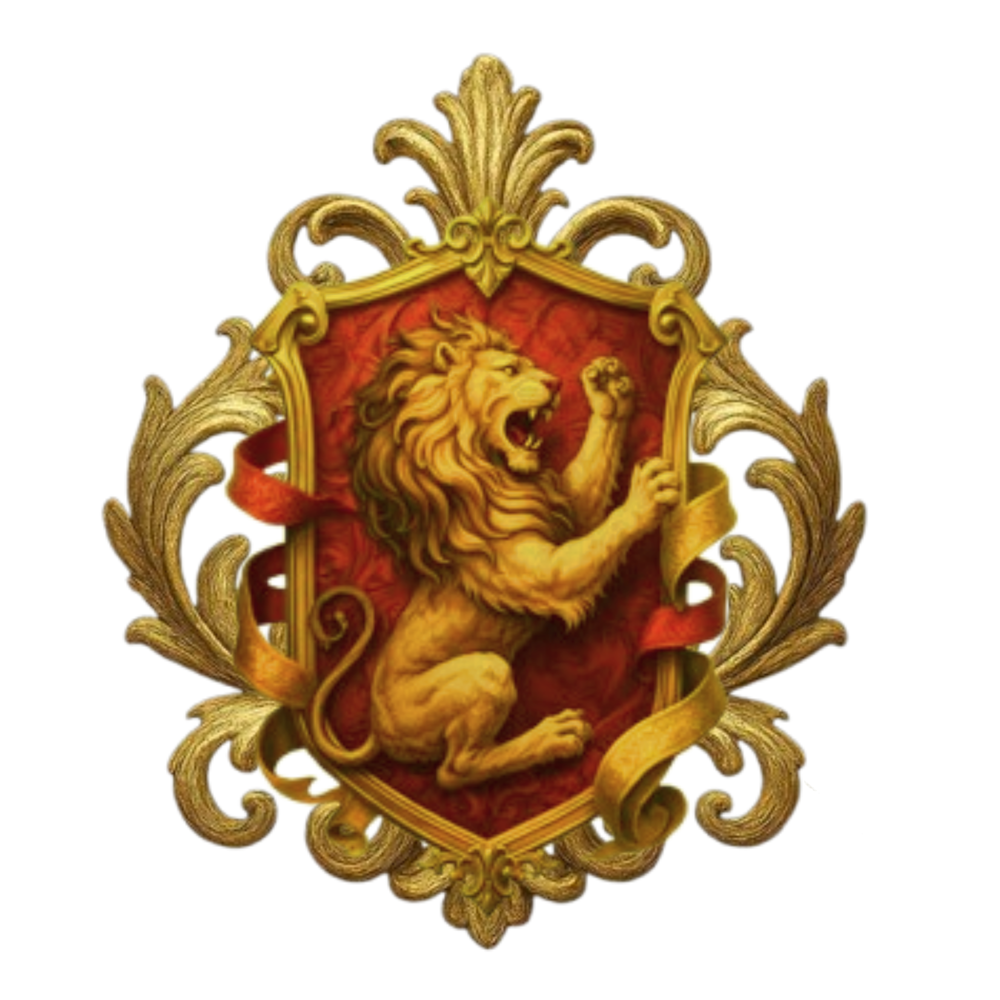
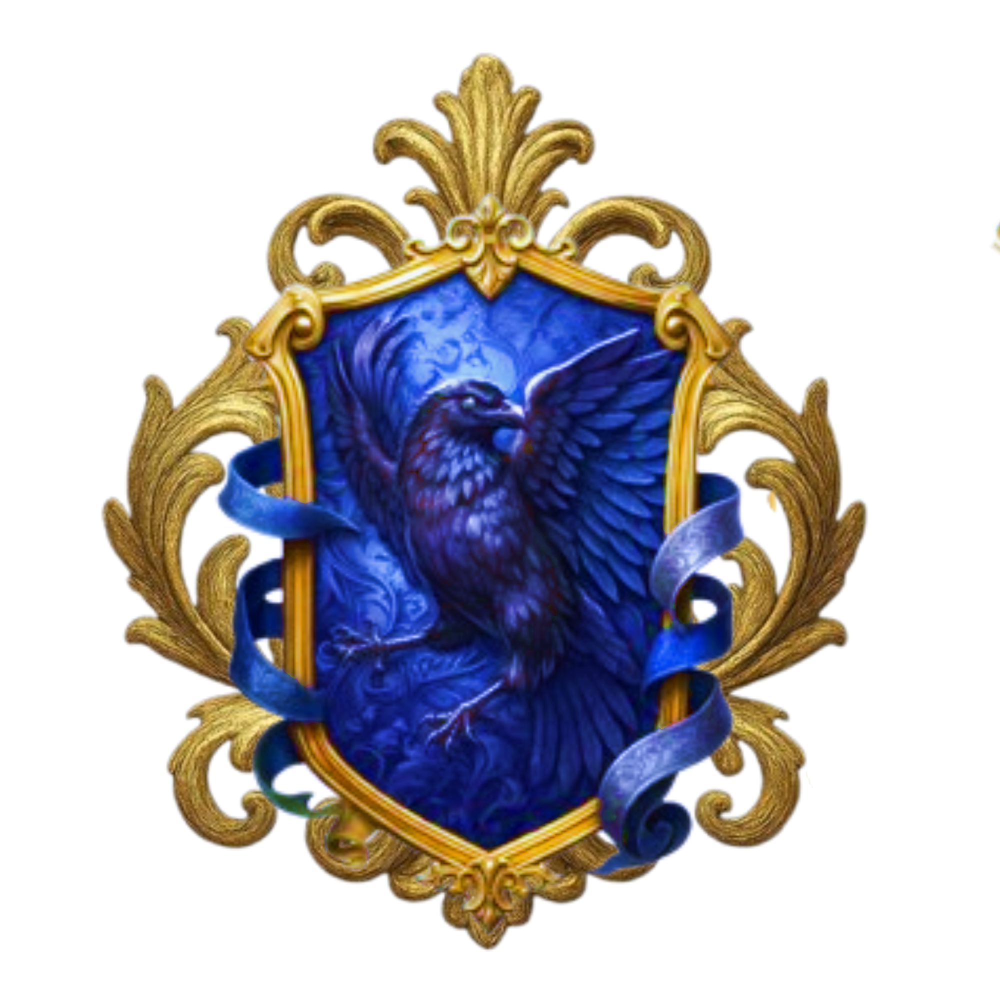
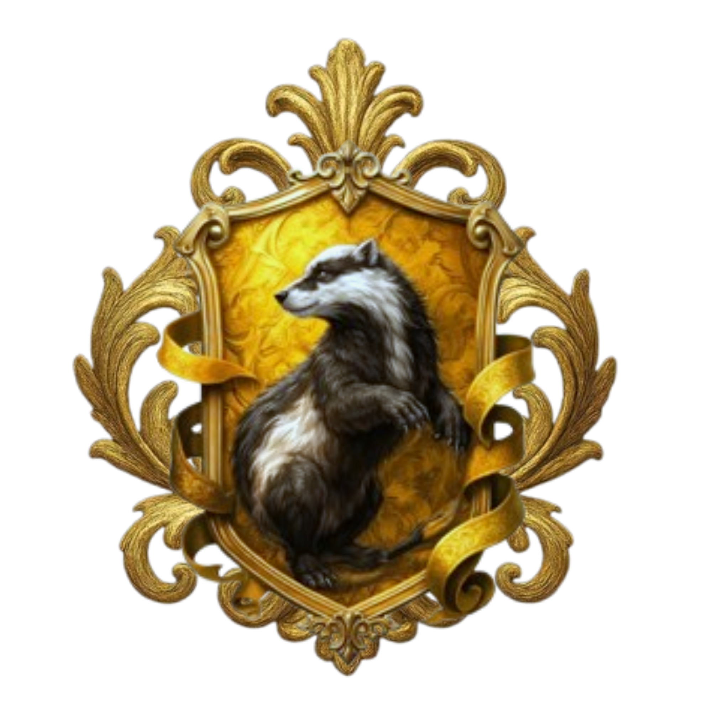
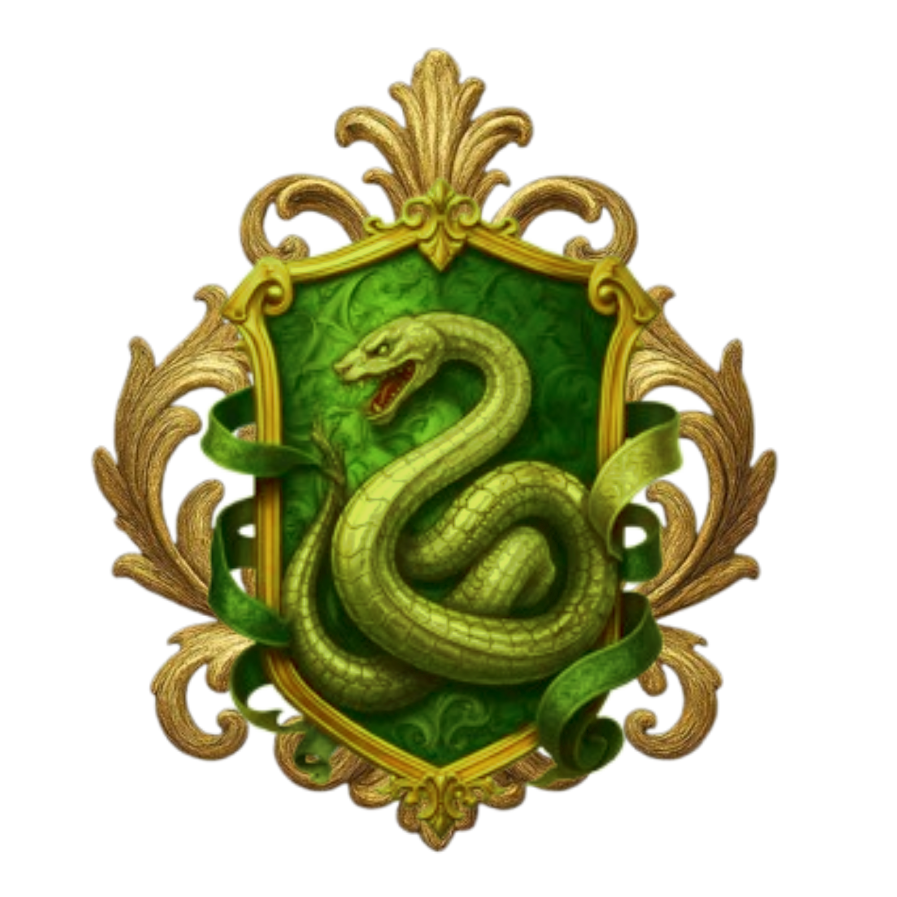

Hogwarts Sorcery School (HSS) — an academy of the arcane arts, veiled from the sight of the Muggle world, standing resplendent within a valley shrouded in eternal mist, reachable only by the Hogwarts Express or a hidden portal gate. Its architecture soars in the manner of an ancient European castle, crowned with towering spires, each embodying one of the four houses. Origins HSS was founded centuries past by four legendary sorcerers who bequeathed their virtues through the houses: Aurelion (blazing courage), Corvane (razor-sharp intellect), Fidelis (unwavering loyalty and diligence), and Vesperyn (fervent ambition). The school was established as both sanctuary and seat of learning for young spellcasters, sequestered from the scrutiny of the non-magical realm.
Four houses. Four paths. One destiny.

Courage, bravery, and determination.
Born from the fire of those who dare to stand when others retreat, Aurelion values courage above comfort. Its members are known for their fearless hearts, unwavering determination, and willingness to protect what they believe is right.

Wisdom, intelligence, and creativity.
Corvane was founded upon the belief that knowledge is the sharpest form of magic. Its members seek answers where others see mysteries, valuing intelligence, curiosity, imagination, and the freedom to think beyond what is known.

Loyalty, kindness, and dedication.
Fidelis believes that the greatest magic is not power, but the bonds we choose to protect. Its members are loyal, compassionate, and devoted to those they call their own, standing beside their friends even when the path becomes difficult.

Ambition, cunning, and resourcefulness.
Vesperyn was shaped by those who refuse to be limited by circumstance. Its members are ambitious, strategic, and resourceful, understanding that sometimes the greatest victories belong to those who know when to act and when to wait.
Discover which house awaits you.
Disclaimer & Hak Paten
Hogwarts Sorcery School merupakan konsep dan karya kreatif yang dikembangkan berdasarkan ide, kreativitas, dan pengembangan dari Core Team Howsorcs.
Seluruh elemen yang dibuat secara khusus untuk proyek ini, termasuk namun tidak terbatas pada lore, sistem permainan, konsep house, karakter original, alur, desain, serta pengembangan dunia, merupakan bagian dari karya kreatif Core Team Howsorcs.
Namun, Hogwarts Sorcery School juga menggunakan sejumlah nama, istilah, konsep, dan elemen yang terinspirasi dari dunia Harry Potter karya J.K. Rowling.
Penggunaan elemen tersebut semata-mata dimaksudkan sebagai bentuk inspirasi dan penghormatan terhadap karya yang menjadi referensi, serta tidak dimaksudkan untuk mengklaim kepemilikan atas karakter, nama, dunia, maupun elemen orisinal yang menjadi hak pemegang hak cipta terkait.
Hogwarts Sorcery School tidak berafiliasi dengan, tidak disponsori oleh, dan tidak secara resmi terhubung dengan J.K. Rowling, Warner Bros., maupun pemegang hak atas Harry Potter.
Hak atas seluruh elemen yang berasal dari karya Harry Potter tetap berada pada pemegang haknya masing-masing. Sementara itu, elemen, konsep, dan pengembangan kreatif yang secara khusus dibuat oleh Core Team Howsorcs merupakan karya orisinal milik Core Team Howsorcs.
© 2026 CORE TEAM HOWSORCS
Hogwarts Sorcery School — A magical world inspired by stories we love, reimagined by Core Team Howsorcs.